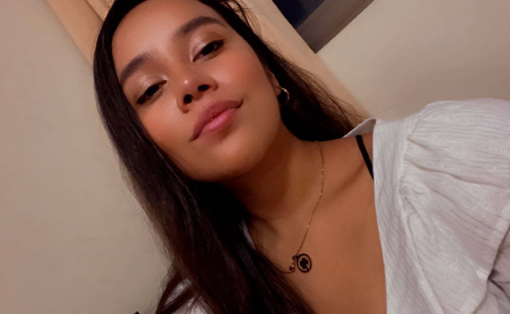
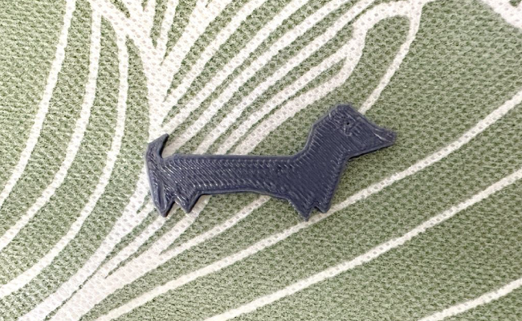
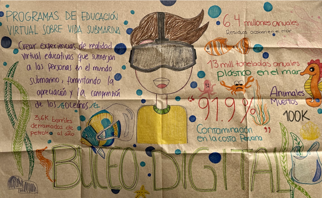
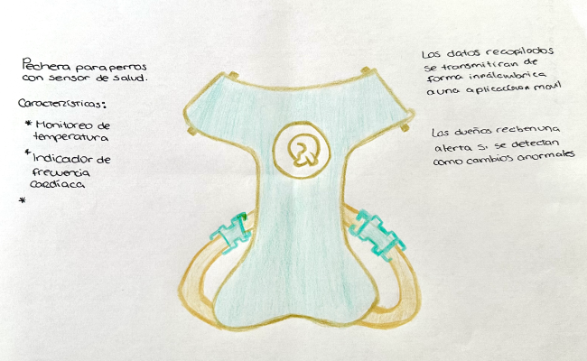

|  |
About me
Soy Paola Burga, tengo 27 años y actualmente estoy en el último ciclo de la carrera de arquitectura de interiores, la cual me apasiona. |
|  |
Impresión 3D
Se realizó una actividad centrada en la impresión en 3D de un dibujo a mano, y en este contexto, seleccioné la silueta de un perro para integrarla con mi concepto de innovación. |
|  |
ODS
Se planteó un Programa de Educación Virtual sobre Vida Submarina con el fin de crear experiencias de realidad virtual educativas que sumerjan a las personas en el mundo submarino. |
|  |
Idea innovadora
Esta innovadora propuesta combina moda canina y tecnología para mejorar la salud de los perros. Incluye ropa con sensores de salud, conectividad a una app móvil para monitoreo en tiempo real, alertas de salud, historiales de salud, personalización de la ropa, comodidad y durabilidad, además de recursos educativos. |
♫
Mi cantante favorita de todos los tiempos es Selena Gomez, esta playlist me encanta por que tiene música variada del mismo estilo.